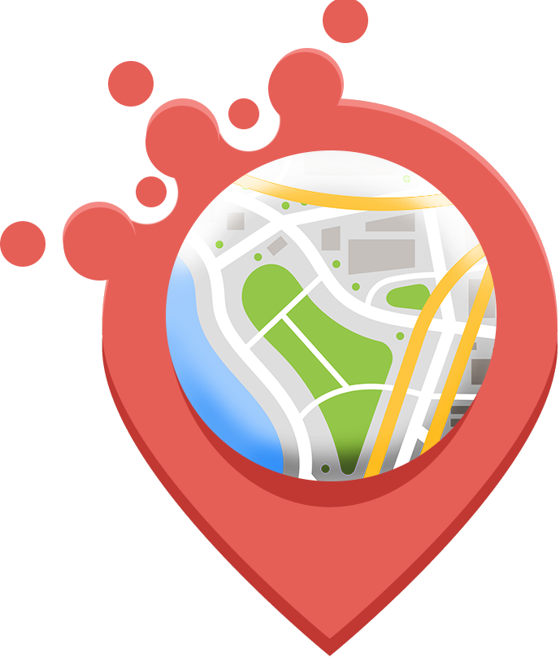
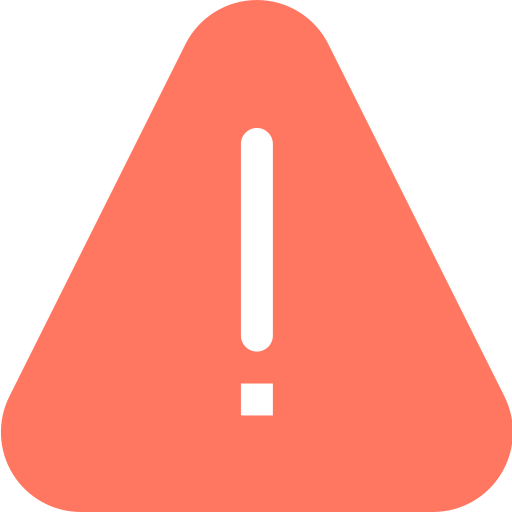

<ion-header>
  <ion-toolbar mode="ios" color="dark">
    <ion-buttons slot="end">
      <ion-button (click)="modalDismiss()">
        <ion-icon slot="icon-only" name="close-circle"></ion-icon>
      </ion-button>
    </ion-buttons>
  </ion-toolbar>
</ion-header>

<ion-content padding>
  <ng-template [ngIf]="comments.length" [ngIfElse]="notComments">

    <h5 id="community-name">{{ community.communityName }}</h5>
    <div class="rating-reviews">
      <bar-rating id="bar-rating" [(rate)]="reviewsAverage" [max]="5" [theme]="'stars'" id="bar-rating" [readOnly]="true"></bar-rating>
      <span><strong>({{ comments.length }})</strong></span>
    </div>

    <ion-item *ngFor="let comment of comments" lines="none">
      <ion-thumbnail slot="start" class="avatar">
        
        
      </ion-thumbnail>
      <ion-label>
        <h2>{{ comment.userId.firstName }}</h2>
        <p>{{ comment.comment }}</p>
      </ion-label>
      <ion-thumbnail slot="end" class="complaint">
        
      </ion-thumbnail>
    </ion-item>
  </ng-template>

  <ng-template #notComments>
    <div id="not-found-comments">
      
      <ion-text color="dark">
          <h2>No recent comments <br> ¡Be the first!</h2>
        </ion-text>
    </div>
  </ng-template>
</ion-content>